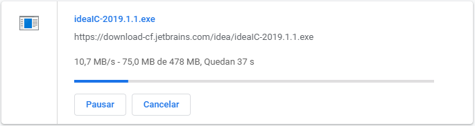

S'està realitzant un programa per a gestionar descàrregues d'arxius. Aquest programa ha de mostrar a l'usuari el temps estimat que trigarà la descàrrega, en funció de la velocitat i el tamany de l'arxiu.
Input Format
El primer nombre indica la velocitat de descàrrega (en KB per segon).
El segon nombre indica el tamany de l'arxiu (en MB).
** Cal tenir en compte que 1MB = 1024 KB
Constraints
-
Output Format
Els segons que trigarà la descàrrega (sense decimals).
Sample Input 0
1 2
Sample Output 0
2048
Explanation 0
El tamany de l'arxiu és 2MB, que són 2048 KB Si la velocitat és d' 1KB per segon, trigará 2048 segons
Sample Input 1
1024 1
Sample Output 1
1
Explanation 1
El tamany de l'arxiu és d' 1MB, que són 1024 KB Si la valocitat és de 1024KB per segon, trigará 1 segon
Sample Input 2
512 10
Sample Output 2
20
Sample Input 3
4096 1024
Sample Output 3
256